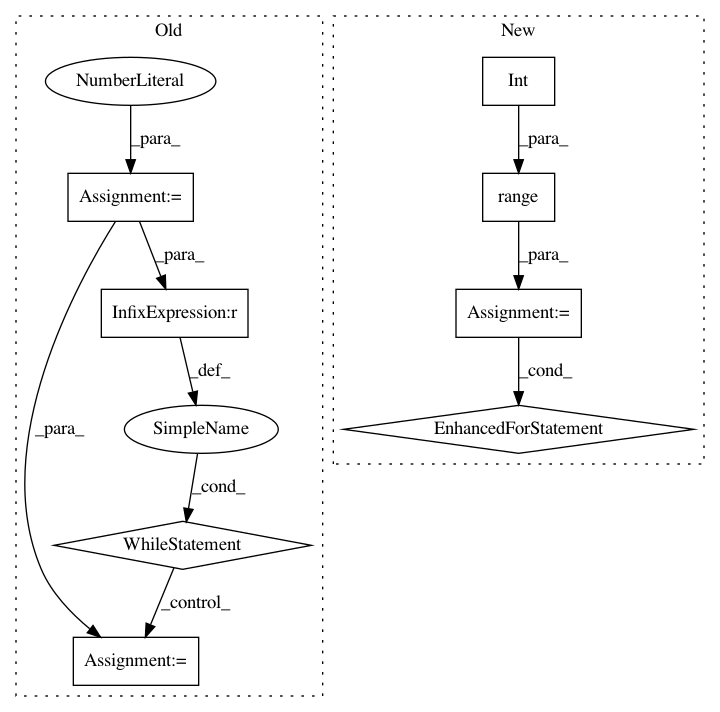

93cfd8bd22d6b798b94aead3c8ea75ace2727265,chainercv/functions/ps_roi_max_align_2d.py,PSROIMaxAlign2D,forward_cpu,#PSROIMaxAlign2D#Any#,95
Before Change
maxval = -1e20
maxidx = -1
iy = 0
while iy < roi_bin_grid_h:
y = roi_start_h + ph * bin_size_h + \
(iy + .5) * bin_size_h / roi_bin_grid_h
ix = 0
while ix < roi_bin_grid_w:
x = roi_start_w + pw * bin_size_w + \
(ix + .5) * bin_size_w / roi_bin_grid_w
// bilinear interpolation {{
y_low, x_low, y_high, x_high, w1, w2, w3, w4 = \
_get_bilinear_interp_params(y, x, height, width)
if y_low is None:
continue
v1 = bottom_data[roi_batch_ind, c, y_low, x_low]
v2 = bottom_data[roi_batch_ind, c, y_low, x_high]
v3 = bottom_data[roi_batch_ind, c, y_high, x_low]
v4 = bottom_data[roi_batch_ind, c, y_high, x_high]
tmpval = w1 * v1 + w2 * v2 + w3 * v3 + w4 * v4
bottom_index = iy * roi_bin_grid_w + ix
if (tmpval > maxval):
maxval = tmpval
maxidx = bottom_index
ix += 1
iy += 1
top_data[n, ctop, ph, pw] = maxval
self.argmax_data[n, ctop, ph, pw] = maxidx
return top_data,
After Change
c = (ctop * group_size + gh) * group_size + gw
if self.sampling_ratio[0] is None:
roi_bin_grid_h = int(np.ceil(roi_height / pooled_height))
else:
roi_bin_grid_h = self.sampling_ratio[0]
if self.sampling_ratio[1] is None:
roi_bin_grid_w = int(np.ceil(roi_width / pooled_width))
else:
roi_bin_grid_w = self.sampling_ratio[1]
maxval = -1e20
maxidx = -1
for iy in six.moves.range(roi_bin_grid_h):
y = roi_start_h + ph * bin_size_h + \
(iy + .5) * bin_size_h / roi_bin_grid_h
y, y_low, y_high = _get_bounds(y, height)
if y is None or y_low is None or y_high is None:
continue
for ix in six.moves.range(roi_bin_grid_w):
x = roi_start_w + pw * bin_size_w + \
(ix + .5) * bin_size_w / roi_bin_grid_w
x, x_low, x_high = _get_bounds(x, width)
if x is None or x_low is None or x_high is None:
continue
// bilinear interpolation {{
w1, w2, w3, w4 = _get_bilinear_interp_params(
y, x, y_low, x_low, y_high, x_high)
v1 = bottom_data[roi_batch_ind, c, y_low, x_low]
v2 = bottom_data[roi_batch_ind, c, y_low, x_high]
v3 = bottom_data[roi_batch_ind, c, y_high, x_low]
v4 = bottom_data[roi_batch_ind, c, y_high, x_high]
tmpval = w1 * v1 + w2 * v2 + w3 * v3 + w4 * v4
bottom_index = iy * roi_bin_grid_w + ix
if (tmpval > maxval):
maxval = tmpval
maxidx = bottom_index
// }}
top_data[n, ctop, ph, pw] = maxval
self.argmax_data[n, ctop, ph, pw] = maxidx
return top_data,
In pattern: SUPERPATTERN
Frequency: 3
Non-data size: 8
Instances
Project Name: chainer/chainercv
Commit Name: 93cfd8bd22d6b798b94aead3c8ea75ace2727265
Time: 2019-02-18
Author: shingogo@hotmail.co.jp
File Name: chainercv/functions/ps_roi_max_align_2d.py
Class Name: PSROIMaxAlign2D
Method Name: forward_cpu
Project Name: scikit-image/scikit-image
Commit Name: cc31d7f56d6cd8569a5f7b47c254d89a85e8691b
Time: 2017-04-17
Author: grlee77@gmail.com
File Name: skimage/transform/pyramids.py
Class Name:
Method Name: pyramid_laplacian
Project Name: tsurumeso/waifu2x-chainer
Commit Name: 6e4be1285888e9caa90fa483e10b869ceb3157d4
Time: 2017-03-03
Author: nstm101339@gmail.com
File Name: waifu2x.py
Class Name:
Method Name: upscale_image